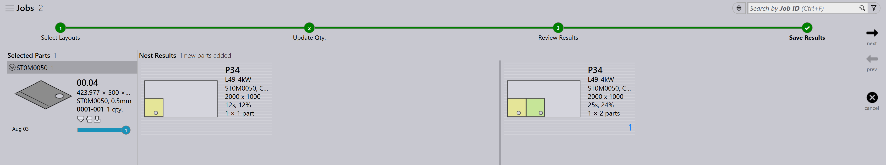

Znovu rozvinutí
TruSmartCAM nemá samostatný modul Repacking. Místo toho je přebalování řešeno prostřednictvím možností na úrovni úlohy, které poskytují flexibilitu ve způsobu kombinování dílů.
Existují tři způsoby, jak lze přebalování provést.
-
Přebalování pomocí Mix parts from multiple Jobs.
-
Ruční přebalování pomocí interaktivního průvodce Add Parts.
-
Ruční přebalování pomocí TecZone.
Repacking with mix parts from multiple Jobs
-
Chcete-li tuto možnost povolit, přejděte na factory → settings → Job → Nest settings → Mix parts from multiple Jobs.

-
Když je tato možnost povolena, umožňuje seskupit díly z různých úloh dohromady během automatického nebo interaktivního rozmísťování, což vede ke kombinovanému zabalení nebo rozmístění.
-
Například:
-
Job-1 má 1 díl, Job-2 má 1 díl.
-
S povolenou možností Mix parts from multiple Jobs může TruSmartCAM přebalit tyto 2 díly do jediného optimalizovaného rozmístění.
-


-
Bez této možnosti zůstávají díly z každé úlohy během rozmísťování/zabalování oddělené s různými názvy layoutů.
-
Přebalování lze provést také ručně bez povolení této možnosti.
Ruční znovu rozvinutí pomocí interaktivního průvodce přidání dílů
-
Ze zobrazení layoutu vyberte díly, které chcete přebalit.
-
Klikněte pravým tlačítkem na díl a zvolte Add Parts… z panelu layoutu.

-
Dokončete proces přebalování podle pokynů v průvodci.
-
Zvolte Show other job parts a přidejte je do aktuální úlohy.

-
Zkontrolujte změny a potvrďte přebalování.

Další podrobnosti naleznete v Přidat díly.
Ruční znovu rozvinutí pomocí TecZone
-
Otevřete TecZone kliknutím na
 .
.

-
V rozhraní TecZone klikněte na Add.

-
Zobrazí se nové okno, kde můžete vybrat díly k přebalení. Klikněte na Show… a poté vyberte Other job parts. Po provedení výběru klikněte na Pick.

-
Zobrazí se nové okno, kde můžete definovat, kam je třeba díl přebalit.
-
Klikněte na Save changes to TruSmartCAM a přebalený layout bude dostupný v TruSmartCAM.